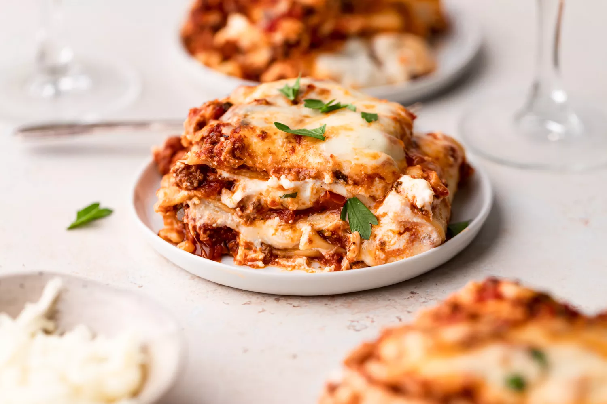

Lasagna Recipe

Description:
Lasagna is so delicious, no wonder it's Garfield's favourite!
Minced beef
1/2 medium onion - diced
1/2 large bell pepper - diced
2 cloves of garlic - minced
1 tin chopped tomatoes
1 glug of red wine
A sprinkle of Italian seasoning
Lots of cheese!
Steps:
Start by making the sauce with minced beef, bell peppers, onions,
and a combo of tomato sauce, tomato paste, and crushed tomatoes.
The three kinds of tomatoes gives the sauce great depth of flavor.
Let this simmer while you boil the noodles and get the cheeses ready.
We're using ricotta, shredded mozzarella, and parmesan -- like the
mix of tomatoes, this 3-cheese blend gives the lasagna great flavor!
From there, it's just an assembly job. A cup of meat sauce, a layer of noodles,
more sauce, followed by a layer of cheese. Repeat until you have three layers
and have used up all the ingredients.
Bake until bubbly and you're ready to eat!